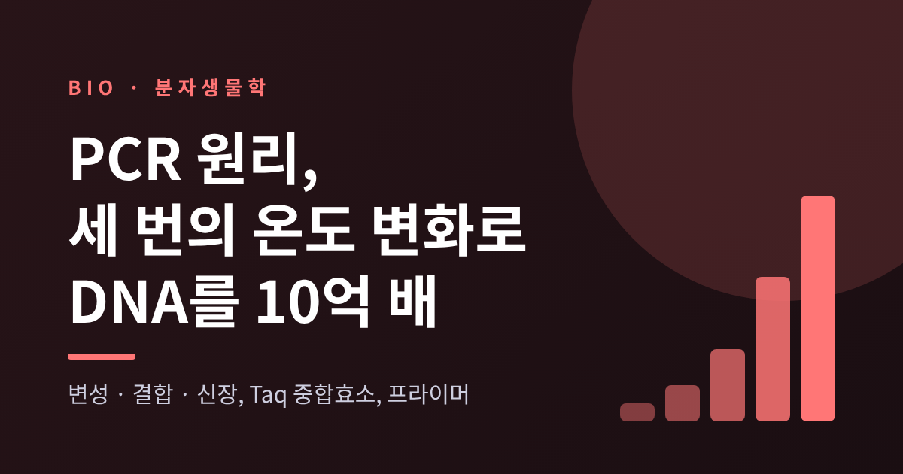
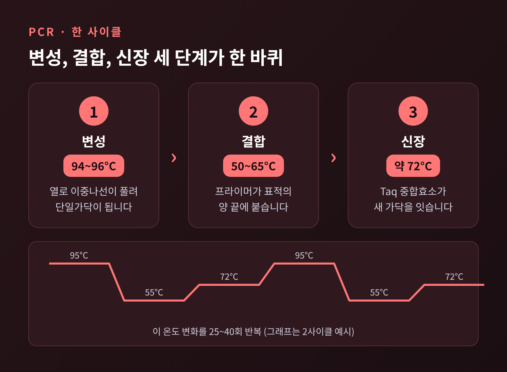
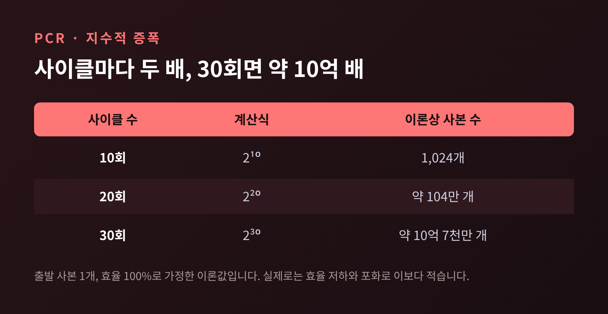
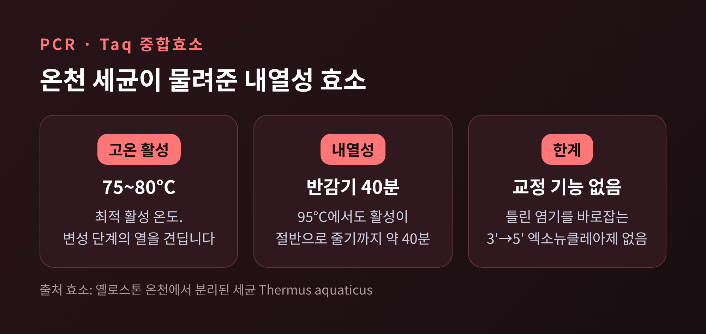
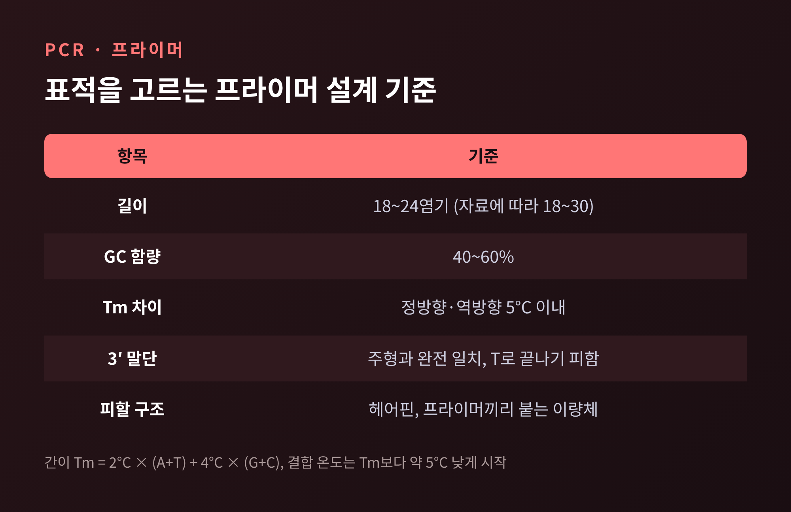
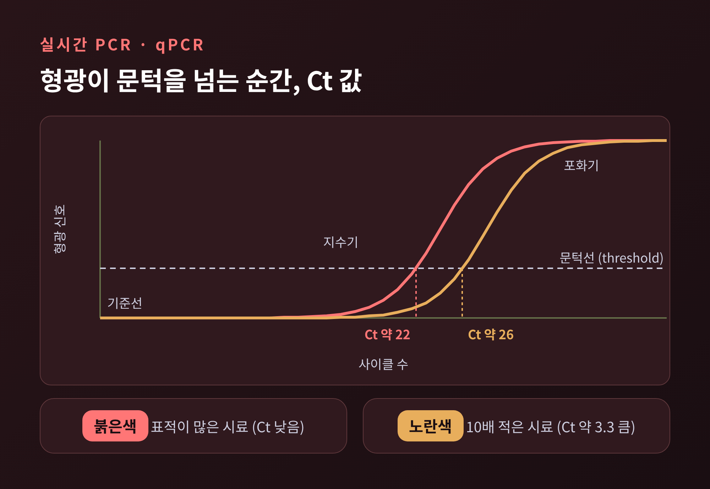
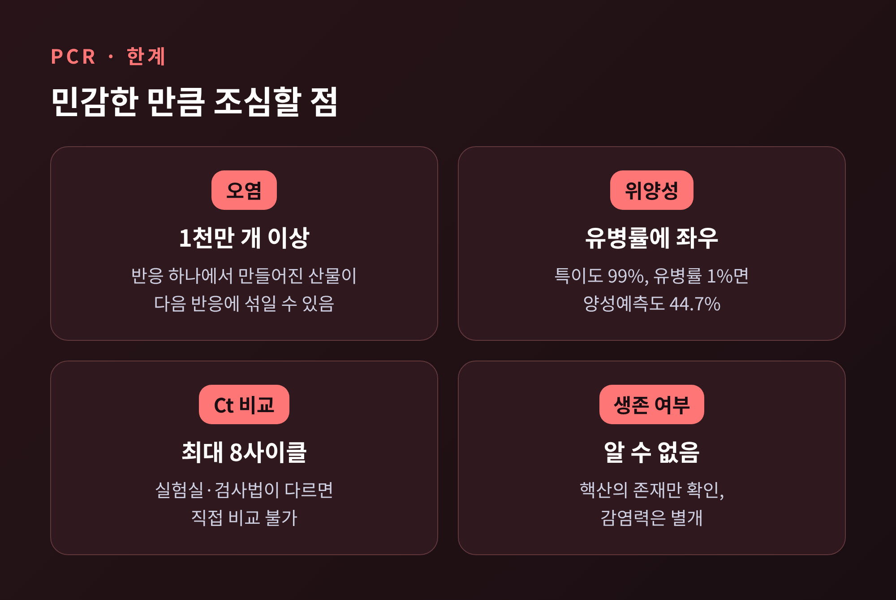

이번 글에서는 PCR(중합효소 연쇄반응)의 원리를 정리해 보겠습니다. PCR은 아주 적은 양의 DNA를 가열과 냉각의 반복만으로 10억 배 이상 복제하는 기술입니다. 변성·결합·신장이라는 세 단계의 온도 변화, 열에 강한 Taq 중합효소, 그리고 표적을 정확히 골라내는 프라이머가 핵심입니다.
이 글은 교양 차원의 설명이며, 의학적 조언이 아닙니다.
PCR은 작은 DNA 조각을 대량으로 복제하는 기법입니다. 미국 국립인간게놈연구소(NHGRI)는 이를 '분자 복사기'에 빗댑니다. 빠르고 비용이 적게 든다는 점도 함께 꼽습니다.
복제가 왜 필요할까요. 분리해 낸 DNA 조각은 그대로는 연구하기가 거의 불가능합니다. 양이 너무 적기 때문입니다. 먼저 늘려야 읽을 수 있고, 비교할 수 있고, 검사할 수 있습니다.
쓰임새는 넓습니다. 인간 유전체 프로젝트의 지도 작성 기법 대부분이 PCR에 의존했습니다. DNA 지문 분석, 세균과 바이러스 검출, 유전질환 진단도 같은 원리 위에 서 있습니다. 반응은 열순환기라는 장비가 몇 분마다 온도를 바꿔 주며 자동으로 진행하고, 몇 시간이면 끝납니다.
한 사이클은 세 번의 온도 변화로 이루어집니다.
첫째는 변성입니다. 시료를 94~96도 안팎으로 가열하면 이중나선을 붙들고 있던 수소결합이 끊어지고 DNA가 두 가닥으로 풀립니다. 반응을 시작할 때는 94~98도에서 몇 분간 더 길게 가열하기도 합니다.
둘째는 결합입니다. 온도를 대략 50~65도로 내리면, 미리 넣어 둔 짧은 DNA 조각인 프라이머가 풀린 가닥의 상보적인 자리에 달라붙습니다. 정확한 온도는 프라이머마다 다르며, 프라이머가 녹는 온도(Tm)를 기준으로 정합니다.
셋째는 신장입니다. 온도를 72도 안팎으로 올리면 중합효소가 프라이머 끝에서부터 뉴클레오타이드를 하나씩 이어 붙여 새 가닥을 만듭니다. Taq 중합효소를 쓸 경우 1kb(염기 1,000개) 길이에 대략 1분이 걸린다고 보면 됩니다.

이 세 단계를 한 바퀴 돌면 DNA는 두 배가 됩니다. 이 바퀴를 보통 25~40회 반복합니다. 자료마다 25~35회, 30~40회로 표기가 조금씩 다른데, 시료의 양과 원하는 산물의 양에 따라 달라지기 때문입니다.
핵심은 지수적 증폭입니다. 이상적인 조건에서는 한 사이클마다 표적이 정확히 두 배가 됩니다. 출발 분자가 X개이고 사이클이 n번이면 결과는 X × 2ⁿ입니다.
숫자로 옮기면 놀랍습니다. 사본 하나가 10사이클 뒤에는 1,024개, 20사이클 뒤에는 약 104만 개가 됩니다. 30사이클을 채우면 약 10억 7천만 개입니다. NHGRI가 30~40회 반복하면 10억 개 이상의 사본이 나온다고 설명한 것과 맞아떨어집니다.

현실은 이론보다 조금 느립니다. 효율이 90%인 경우를 계산한 자료에서는 100개로 시작해 30사이클을 돌렸을 때 약 236억 개가 나옵니다. 같은 조건의 이론값(약 1,070억 개)과 비교하면 5분의 1 수준입니다.
그리고 증폭은 영원히 이어지지 않습니다. 재료인 dNTP와 프라이머가 바닥나고, 효소 활성이 떨어지고, 산물끼리 서로 다시 붙기 시작하기 때문입니다. 결국 시작 사본 수와 관계없이 마이크로리터당 10¹¹~10¹² 사본 언저리에서 멈춥니다. 반응이 끝난 뒤의 양만 보는 일반 PCR이 '있다/없다'를 확인하는 정성 검사에 가까운 이유입니다.
PCR 초기에는 난점이 하나 있었습니다. 변성을 위해 가열하면 DNA 중합효소가 열에 망가졌습니다. 사이클마다 새 효소를 넣어야 했으니 번거로울 수밖에 없었습니다.
해법은 뜨거운 곳에 사는 생물에서 나왔습니다. 1960년대에 미생물학자 토머스 브록의 연구팀은 옐로스톤 국립공원의 온천을 조사했습니다. 1966년 늦여름 머시룸 스프링의 배수로, 섭씨 약 69도(화씨 156도)의 황색 매트에서 시료를 채취했고, 학부생 허드슨 프리즈가 그해 가을 실험실에서 세균을 분리했습니다. 이 세균이 테르무스 아쿠아티쿠스(Thermus aquaticus)입니다. 당시 실험실에서 배양한 내열 세균의 한계가 약 60도(화씨 140도)였으니, 한참 뜨거운 곳의 생물이었던 셈입니다.
이 세균의 중합효소가 Taq입니다. 최적 활성 온도는 75~80도이고, 95도에서도 반감기가 약 40분이어서 변성 단계의 열을 견딥니다. 신장 속도는 75~80도에서 초당 약 150개의 뉴클레오타이드로 알려져 있습니다.
아쉬운 점도 있습니다. Taq에는 틀린 염기를 바로잡는 교정 기능(3′→5′ 엑소뉴클레아제)이 없습니다. 정확도가 중요한 작업에는 교정 기능을 갖춘 다른 효소가 쓰입니다. NEB는 Phusion 효소가 Taq보다 39~50배 정확하다고 안내합니다.

PCR을 떠올린 사람은 캘리포니아의 바이오 기업 시터스(Cetus)에서 일하던 생화학자 캐리 멀리스입니다. 본인의 설명에 따르면 1983년, 샌프란시스코 베이 지역에서 멘도시노의 오두막으로 차를 몰고 가던 길에 핵심 발상이 떠올랐습니다. 당시 그의 업무는 동료들이 쓸 짧은 유전자 조각, 곧 프라이머를 만드는 일이었습니다.
처음부터 환영받지는 못했습니다. 동료들은 대체로 반신반의했고, 상사였던 토머스 화이트도 틀릴 수 있지만 맞을 수도 있다고 보았다고 전해집니다. 그래도 화이트는 멀리스가 이 일에 집중하게 했고, 다른 연구자들이 재현 가능한 데이터를 쌓았습니다. 첫 성공 실험은 1983년 12월 16일로 기록됩니다.
세상에 처음 알려진 것은 1985년 사이언스 논문이었습니다. 낫형 적혈구 빈혈 검사에 쓰인 사례였고, 멀리스의 상세한 논문은 네이처와 사이언스에서 거절당해 1987년에야 다른 학술지에 실렸습니다. 노벨상 공식 페이지가 발명 연도를 1985년으로 적은 것과 아이디어가 나온 1983년 사이에 차이가 있는 것은 이 때문으로 보입니다. 1993년 멀리스는 노벨 화학상의 절반을 받았고, 1991년 시터스는 PCR 권리를 로슈에 약 3억 달러에 넘겼습니다.
예전엔 손으로 온도를 바꿔 가며 수행하던 작업이 지금은 열순환기 한 대로 끝납니다. 그 번거로움을 느낀 연구자들의 요청으로, 기술자가 피펫 로봇을 개조해 자동 온도 순환을 만든 것이 시초로 전해집니다.
증폭할 구간의 시작과 끝을 정하는 것이 프라이머입니다. 정방향과 역방향, 두 개를 한 쌍으로 쓰며, 3′ 끝이 서로 마주 보게 설계합니다. 이 두 지점 사이의 구간만 증폭됩니다.
설계 기준은 자료마다 약간씩 다르지만 큰 틀은 같습니다.
Tm을 대강 가늠하는 간이식도 있습니다. 2도 × (A+T 개수) + 4도 × (G+C 개수)입니다. 20염기 중 G·C가 10개라면 Tm은 60도이고, 결합 온도는 이보다 5도쯤 낮은 55도 근처에서 시작합니다.

기준이 이렇게 까다로운 이유가 있습니다. 결합 온도가 너무 낮거나 프라이머가 엉뚱한 자리에 붙으면 원하지 않는 조각이 함께 증폭됩니다. 프라이머 이량체가 생기면 재료만 소모됩니다. 프라이머는 반응의 정확성을 정하는 부품입니다.
일반 PCR은 반응이 끝난 뒤에 결과를 봅니다. 실시간 PCR(qPCR)은 증폭이 일어나는 동안 형광을 측정합니다. 변성·결합·신장의 순환은 같고, 산물이 쌓일수록 형광 신호가 올라간다는 점이 다릅니다.
형광을 내는 방식은 크게 둘입니다. SYBR Green은 이중가닥 DNA에 달라붙어 빛나는 염료인데, 프라이머 이량체 같은 엉뚱한 산물에도 반응합니다. TaqMan 프로브는 표적에만 붙는 프로브를 Taq가 신장 중에 잘라 내면서 형광이 켜지는 방식이며, 특이성이 중요한 진단에서 권장됩니다.
여기서 나오는 핵심 숫자가 Ct(cycle threshold)입니다. 형광이 기준선 위 문턱을 넘는 사이클 번호를 말합니다. 같은 검사 안에서 Ct가 낮을수록 처음에 표적이 많았다는 뜻이고, 효율이 100%에 가까우면 Ct가 약 3.3 차이 날 때 시작량은 10배 차이가 납니다.

쓰임은 폭넓습니다. HIV와 간염 바이러스의 바이러스량 추적, 호흡기 바이러스와 성매개 감염의 진단, 결핵과 약제 내성 검출, 식품·물 검사에 쓰입니다. RNA 바이러스는 먼저 RNA를 DNA로 바꾸는 역전사 단계를 앞에 붙여 같은 방식으로 검사합니다.
민감한 기술은 민감한 만큼 약점도 큽니다.
가장 큰 문제는 오염입니다. 반응 하나에서 주형 DNA가 1천만 개 이상 만들어집니다. 이전 반응의 산물이 극미량이라도 다음 반응에 흘러들면 가짜 신호가 생깁니다. 그래서 검사실은 DNA 준비, 반응 세팅, 열순환, 산물 분석 구역을 나눕니다. 에어로졸 필터 팁을 쓰고, 표적 없이 돌리는 대조 반응(NTC)을 함께 넣습니다. dTTP 대신 dUTP를 쓰고 반응 전에 UDG 효소로 이전 산물을 분해하는 방법도 있습니다.
위양성의 해석에도 주의가 필요합니다. 온타리오 공중보건 기관은 2020년 8월 15일까지 85만 건이 넘는 검체에서 위양성 의심 사례가 약 30건, 0.01% 미만이었다고 보고했습니다. 대단히 정확한 검사입니다. 그럼에도 유병률이 낮은 때에는 양성 결과 중 진짜 비율, 곧 양성예측도가 떨어집니다. 이 기관의 예시를 보면 민감도 80%, 특이도 99%인 검사에서 유병률이 1%이면 양성예측도는 44.7%, 10%이면 89.9%입니다.
Ct 값도 만능이 아닙니다. 검사법과 실험실이 다르면 직접 비교할 수 없습니다. 26개 실험실의 숙련도 시험에서는 Ct가 최대 8사이클 벌어졌습니다. PCR은 핵산이 있는지를 볼 뿐이어서, 그 바이러스가 살아 있는지, 옮길 힘이 있는지는 알려 주지 않습니다. 프라이머가 붙는 자리에 변이가 생기면 놓칠 수도 있습니다.

정리하면 이렇습니다. 가열해서 풀고, 식혀서 붙이고, 데워서 잇는 세 번의 온도 변화를 수십 번 되풀이하면 DNA 한 조각이 10억 개로 불어납니다. 그 바탕에는 온천의 세균이 남긴 내열성 효소와, 표적을 정확히 고르는 프라이머가 있습니다.
"PCR은 DNA를 읽는 기술이 아니라, 읽을 수 있을 만큼 늘리는 기술이다."
양성과 음성이라는 결과 한 줄 뒤에 이런 원리와 한계가 있다는 것을 알고 나면, 검사 소식을 대하는 눈이 조금은 차분해지지 않을까 생각합니다. 옐로스톤 온천에서 건져 올린 작은 세균이 오늘날 실험실과 병원의 일상을 바꾸었다는 사실은 되새겨 볼 만합니다.